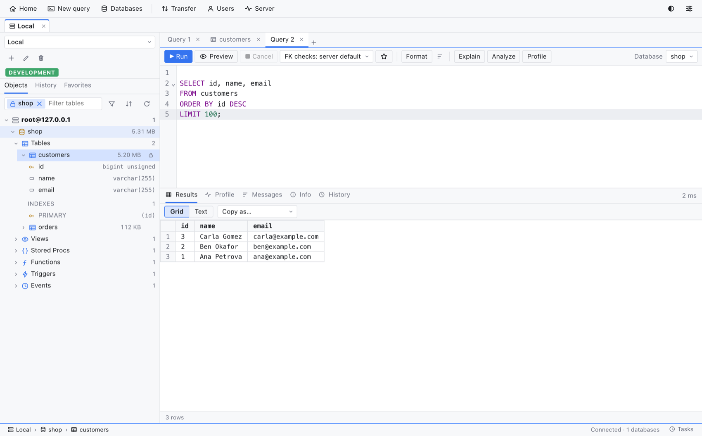
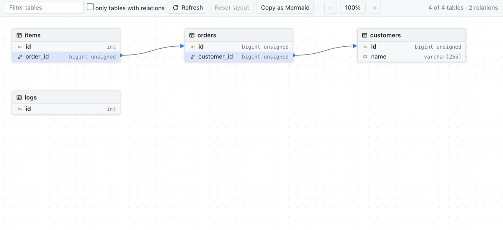
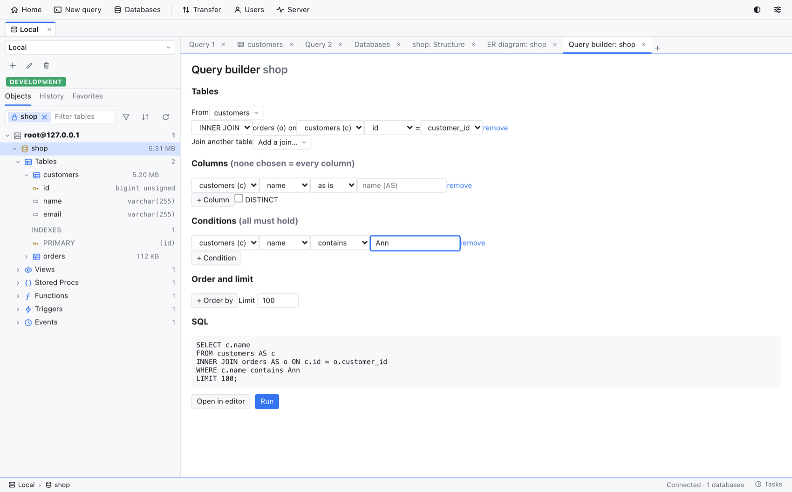
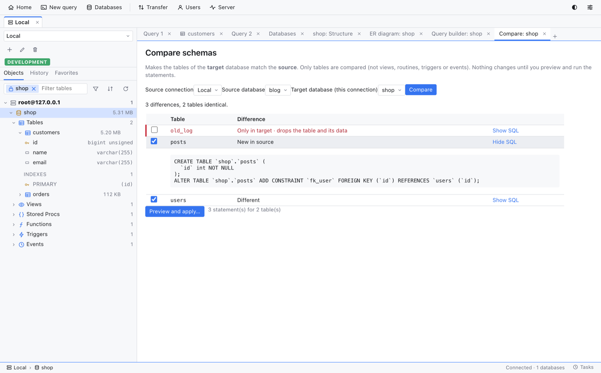
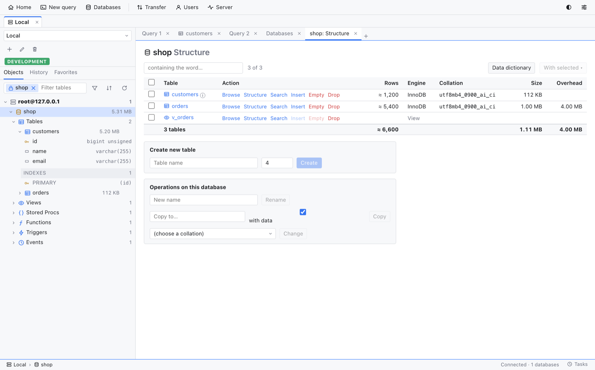
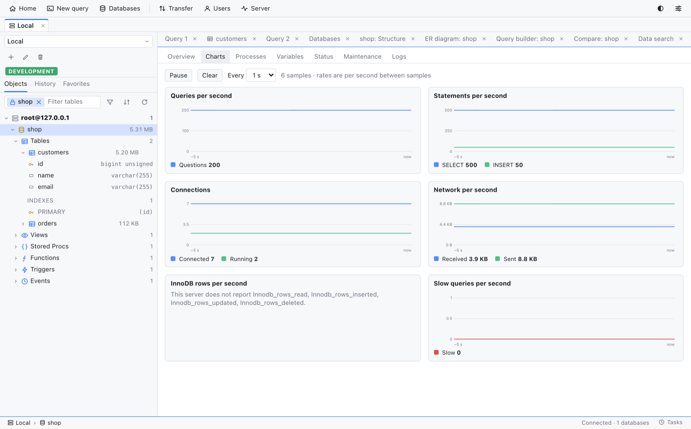
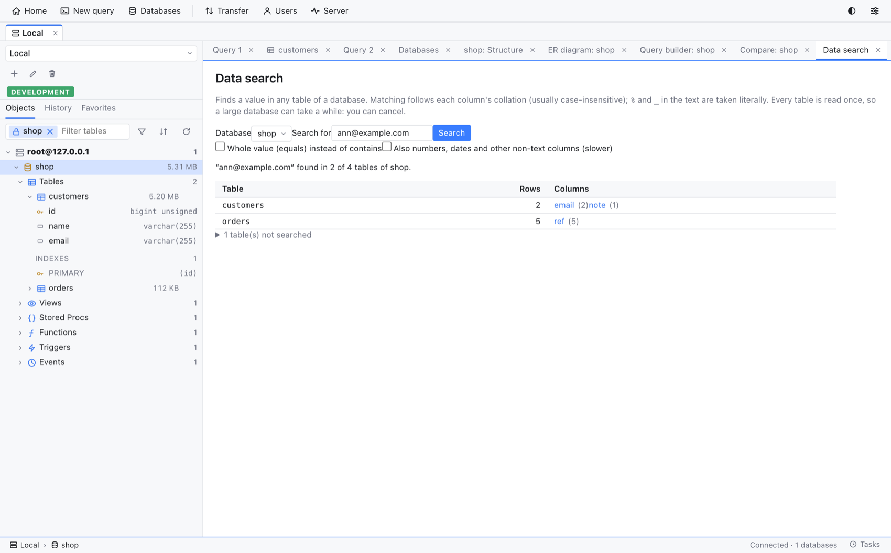
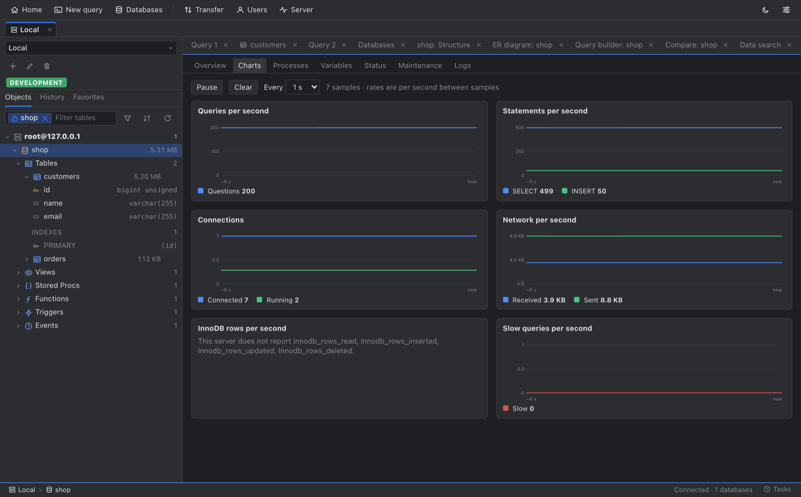

Object browser
Databases, tables, views, routines, triggers and events with sizes, and a filter that understands /regex/, type:view, db:shop and col:email.
Open source · Apache-2.0 · macOS
MyLoDB is a fast, native client for MySQL, MariaDB and SQLite, written in Rust. Browse and edit data, design tables, build queries visually, compare schemas, and stay safe on production: with colour-coded environments, server-enforced read-only and a preview before anything destructive runs.

Databases, tables, views, routines, triggers and events with sizes, and a filter that understands /regex/, type:view, db:shop and col:email.
Autocomplete that knows your tables and aliases, a formatter, Explain and a profiler, history, favorites, your own snippets, and a command palette on ⌘K.
Server-side paging, filters, multi-column sort, staged edits written in one transaction, a foreign-key picker and a BLOB viewer.
Pick tables, join them from foreign keys, choose columns and functions, add conditions. The SQL is built and quoted by the backend, so a mistake is explained instead of sent to the server.
Every table and foreign key of a database, laid out by key depth. Drag, zoom, filter, open a table, or copy the diagram as Mermaid.
Make one database match another, on the same or another connection. See each difference with its SQL, and apply it through a preview. Drops are never pre-selected.
Find a value in any table of a database, with per-column counts, progress and cancel. Click a hit to open the table filtered to it.
Duplicate, redundant and missing foreign-key indexes from your definitions, plus indexes the server never used. Fixes go through Preview SQL.
Processes, variables, status, maintenance and logs, plus live per-second charts of queries, statements, connections and network.
Environment colours, a read-only session enforced by the server, query time limits, a review of destructive SQL with row estimates, and type-to-confirm.
Consistent SQL backups, restore with a script preview, CSV and JSON import with column mapping, and export to CSV, JSON, SQL, XML, HTML and Excel.
Open a .sqlite or .db file: browse, query, edit rows in the grid and run SQL that changes it, or open it read-only. What a file cannot have is disabled, with the reason.
MyLoDB checks for a new version, shows what changed, and Update now downloads it, replaces the app and restarts. Updates are signed; skip a version or switch the check off in About.
Screenshots show the real interface running on demo data, not a real server.








Measured on a local MySQL 9.7.2 with a 10-million-row table of about 1 GB, larger than the server's buffer pool. Single runs on one machine: treat them as indications. The method, the limits and what was not measured are published.
| Operation | Result |
|---|---|
| First page (500 rows) | 6 ms |
| Jump to the middle (keyset paging) | 3.3 ms (OFFSET: 1,190 ms) |
| Jump to the last page (keyset) | 2.0 ms (OFFSET: 2,336 ms) |
| Estimated row count | 0.9 ms (exact COUNT(*): 820 ms) |
| Export to CSV | 9.4 s, about 1.06 million rows per second |
| Memory during a 1.4 GB export | 5 to 11 MB |
Get the installer from the latest release: MyLoDB_<version>_aarch64.dmg for a Mac with Apple Silicon (M1 and later) or MyLoDB_<version>_x64.dmg for an Intel Mac (from 0.4.0). Not sure which you have? → About This Mac shows Chip: Apple M… or Processor: Intel. Each file has a SHA-256 checksum next to it.
Once installed, MyLoDB offers new versions by itself (Help → Check for Updates): you see what is new and choose Update now, Later or Skip this version. Copies older than 0.4.0 cannot do this yet: install 0.4.0 by hand once.
MyLoDB is not signed with a paid Apple Developer certificate. Nothing is wrong with your download, and you do this once:
Prefer Terminal? xattr -dr com.apple.quarantine /Applications/MyLoDB.app
Passwords are stored in the macOS Keychain. MyLoDB sends no telemetry and talks only to the servers you connect to. You can also build it from source.
MyLoDB is written by Omar Farook Hridoy (farookhridoy.com) at thelarasoft.com. Also by the author: Tavrix, an SSH terminal, file manager and editor for Mac and Windows.
MyLoDB is independent and is not affiliated with SQLyog or Webyog. Bug reports and ideas are welcome in GitHub Issues.